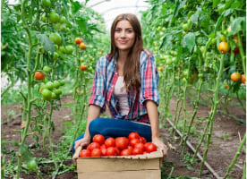

История компании
Компания “Nutritech System” уже более пятнадцати лет является ведущим
региональным представителем в обеспечении разработанных по последним технологиям специальных удобрений в
странах бывшего СССР и Восточной Европы.
Мы предлагаем водорастворимые подкормки для различных культур: тепличных, полевых, плодовых, а также для
фертигации на открытых полях.
Наша компания поставляет продукты, разработанные по последним технологиям.
История компании
Компания “Nutritech System” уже более пятнадцати лет является ведущим
региональным представителем в обеспечении разработанных по последним технологиям специальных удобрений в
странах бывшего СССР и Восточной Европы.
Мы предлагаем водорастворимые подкормки для различных культур: тепличных, полевых, плодовых, а также для
фертигации на открытых полях.
Наша компания поставляет продукты, разработанные по последним технологиям.
Контакты
Мы находимся:
Россия,
г.Москва, ул. Гиляровского 8 строение 1
Мы принимаем звонки:
+7(495) 783-7048
Мы ждём вас
в наших соц.сетях:
Рекомендации по продуктам
Здоровое питание - это, прежде всего, правильный подбор продуктов, которые должны удовлетворять суточную потребность организма во всех необходимых питательных веществах и элементах.
ЧитатьПитание культур

Наш основной бизнес тесно связан с сельским хозяйством и производством
продуктов
питания.
Узнайте, как мы помогаем фермерам, и откройте для себя наши решения по питанию
сельхоз
культур.
 +7(495) 783-7048
+7(495) 783-7048